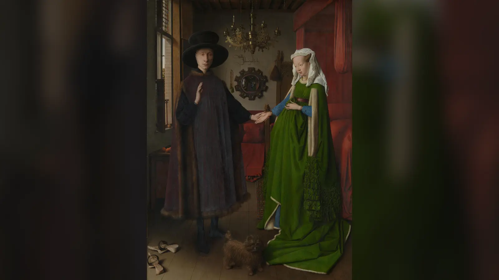

Loş ama karanlık olmayan bir odadayız. Soldaki pencereden gündüz ışığı giriyor; buna rağmen pirinç avizenin yalnızca bir kolunda mum yanıyor. Koyu giysili adam sağ elini kaldırmış, diğer eliyle yeşil elbiseli kadının elini tutuyor. Kadın ağır kumaşını karnının önünde topladığı için ilk bakışta hamileymiş gibi görünüyor. Ayaklarının dibinde küçük, tüylü bir köpek duruyor. Pencere kenarında birkaç portakal, yerde çıkarılmış takunyalar, sağ tarafta kıpkırmızı bir yatak var. Fakat resmin en şaşırtıcı bölümü çiftin arasında değil, arkalarındadır: dışbükey aynanın küçücük yüzeyinde odanın görmediğimiz tarafı, çiftin sırtları, açık kapı ve kapıdan içeri giren iki kişi görünür. Aynanın hemen üstünde ise bir ressam imzasından daha tuhaf duran cümle yazılıdır: “Johannes de eyck fuit hic 1434.” Yaklaşık karşılığı, “Jan van Eyck 1434’te buradaydı”dır.
Bu ayrıntılar yüzyıllar boyunca tek bir hikâyeye bağlandı. Tabloya Türkçede hâlâ sık sık Arnolfini’nin Evlenmesi denmesinin nedeni de budur: Adamın kaldırdığı el yemin, birleşen eller nikâh, aynadaki kişiler şahit, tek mum kutsal birlik, çıkarılmış ayakkabılar kutsal zemin, köpek sadakat işareti olarak okundu. Erwin Panofsky bu yorumun modern biçimini 1934’te kurdu ve resmi neredeyse görsel bir evlilik belgesi gibi değerlendirdi. Fakat daha sonraki belge araştırmaları ve National Gallery’nin teknik incelemeleri bu kusursuz görünen sembol zincirinin önemli halkalarını zayıflattı.
Bugün kesin olarak bildiklerimiz ile yorumladıklarımızı birbirinden ayırmak gerekiyor. Jan van Eyck eseri 1434’te yaptı; meşe panel üzerine yağlıboyadır ve Londra’daki National Gallery’dedir. Çiftin Arnolfini ailesiyle bağlantısı güçlüdür, ancak kadının kimliği ve resmin tam işlevi konusunda tartışma sürer. Aynada gerçekten iki küçük figür vardır; fakat bunlardan birinin kesinlikle Van Eyck olduğunu kanıtlayamayız. Köpek gerçekten vardır; fakat yalnızca “sadakat” demek zorunda değildir. Kadın hamile görünür; fakat kıyafeti gebelik kanıtı değildir. Bir mum gerçekten yanar; fakat bunun “evlilik mumu” olduğuna dair sağlam bir tarihsel belge bulunmamıştır.
Bu yüzden Arnolfini Portresi’ni ilginç yapan şey, içinde çözülecek tek bir gizli şifre bulunması değildir. Van Eyck gündelik nesneleri öylesine olağanüstü bir görsel kesinlikle resmetmiş ve bunları öylesine bilinçli bir kompozisyona yerleştirmiştir ki gerçek eşya, toplumsal statü göstergesi, dinsel çağrışım ve sanatçının görsel oyunu birbirinden kolayca ayrılamaz.
Arnolfini’nin Evlenmesi Tablosu Ne Anlatıyor?
National Gallery’nin güncel katalog başlığı eseri ihtiyatlı biçimde “Portrait of Giovanni(?) Arnolfini and his Wife”, yani “Giovanni(?) Arnolfini ve Eşinin Portresi” olarak tanımlar. Soru işareti önemlidir. Müze, bir zamanlar güçlü biçimde benimsenen “evlilik töreni” açıklamasını artık tablonun tartışmasız konusu olarak sunmaz. En erken güvenilir kayıtlardan biri de bunu destekler: Eser 1516’da Avusturyalı Margaret’in koleksiyonunda kaydedildiğinde kabaca “Hernoul le Fin ve karısı bir odada” diye tarif edilmişti. Bugünkü “Arnolfini Marriage” adı Van Eyck’in esere verdiğini bildiğimiz özgün ve değişmez bir başlık değildir.
Görünen sahne yine de olağan bir çift portresinden fazlasını düşündürür. İki figür tam boy gösterilmiş, elleri birbirine temas etmiş, adam sağ elini kaldırmış ve mekân sıradan bir fon olmaktan çıkarılıp neredeyse üçüncü karaktere dönüştürülmüştür. Pencere, meyveler, pahalı kumaşlar, kürk, yatak, pirinç avize, ayna, boncuklar, ayakkabılar ve köpek çiftin maddi dünyasını kurar. Lorne Campbell’in National Gallery kataloğu burayı çoğu popüler anlatıda söylendiği gibi basit bir “yatak odası” değil, zengin bir kent evinin kabul odası olarak değerlendirir; 15. yüzyılda böyle bir odada yatağın bulunması şaşırtıcı değildi.
Bu ayrım tablonun yorumunu değiştirir. Yatak gördüğümüz için sahneyi otomatik olarak cinsellik, gebelik veya düğün gecesine bağlamak modern bakışın tuzağı olabilir. Aynı biçimde her pahalı nesneyi mistik sembole dönüştürmek çiftin sosyal konumunu gözden kaçırır. Kürkler, uzun kumaşlar, ithal meyveler ve nadir halı yalnızca “şifre” değil, paranın görünür biçimleridir.
Fakat resim fotoğraf değildir. Kızılötesi incelemeler Van Eyck’in yüzlerde, ellerde ve ayaklarda değişiklikler yaptığını; bugün sembolik kabul edilen bazı nesnelerin ilk çizimde bulunmadığını gösterdi. Odanın perspektifi de bütünüyle tutarlı değildir. Van Eyck gerçeği kaydetmekten çok, son derece ikna edici bir gerçeklik kurmuştur. Bu nedenle Arnolfini Portresi ne yalnızca düğün belgesi ne yalnızca ev içi kayıt ne de her nesnesi tek anlama gelen bir sembol kataloğudur.
Tablodaki Çift Gerçekte Kim?
Arnolfini ailesi, İtalya’nın Lucca kentinden Kuzey Avrupa’ya uzanan ticari ağların parçasıydı. 15. yüzyıl Brugge’ü Burgonya dünyasının en önemli ticaret merkezlerinden biriydi ve İtalyan tüccarlar burada kumaş, finans ve lüks mallar üzerinden büyük servetler oluşturabiliyordu. Tabloya ilişkin 1516 ve 1523–24 envanterlerinde erkeğin adı “Hernoul le Fin” ve “Arnoult Fin” gibi biçimlerde kaydedildi. Bunların “Arnolfini” adının bozulmuş biçimleri olması güçlü bir olasılıktır. Dolayısıyla Arnolfini bağlantısı rastgele modern bir yakıştırma değildir.
Sorun, ailede birden fazla Giovanni bulunmasıdır. Uzun süre resimdeki adamın Giovanni di Arrigo Arnolfini, kadının da Giovanna Cenami olduğu kabul edildi. Panofsky’nin yorumu da bu kimlik üzerinden büyük etki yarattı. Fakat arşiv araştırmaları Giovanni di Arrigo ile Giovanna Cenami’nin evliliğinin 1447’de gerçekleştiğini gösterdi. Van Eyck’in tablosu açık biçimde 1434 tarihlidir ve sanatçı 1441’de ölmüştür. Bu nedenle tablo onların 1434’teki nikâhını gösteriyor olamaz.
Campbell, erkeği Giovanni di Nicolao Arnolfini olarak teşhis etmenin daha makul olduğunu savunur. Bu Giovanni Brugge’de yaşayan Lucchalı bir tüccardı ve Van Eyck’in Berlin’de bulunan başka bir erkek portresindeki kişiyle de ilişkilendirilir. Campbell tablodaki kadını Giovanni di Nicolao’nun ikinci eşi olarak değerlendirmiştir; ancak kadının adı kesin biçimde belirlenmiş değildir. National Gallery’nin güncel eser başlığındaki “Giovanni(?)” işareti bu ihtiyatı korur.
Margaret L. Koster 2003’te farklı bir çözüm önerdi: Kadının Giovanni di Nicolao’nun ilk eşi Costanza Trenta olabileceğini ve resmin onun ölümünün ardından hazırlanmış bir anma portresi olarak okunabileceğini savundu. Bu teori tek mum, ayna çevresindeki Çile sahnelerinin dağılımı ve başka ayrıntılar üzerinden yaşayan erkek ile ölen eş arasında anlam kurar. Costanza’nın 1433’e gelindiğinde ölmüş olduğunu gösteren aile belgesiyle 1434 tarihi arasındaki yakınlık dikkat çekicidir. Fakat Koster’ın çözümü de genel kabul görmüş nihai teşhis değildir. En güvenli ifade şudur: Arnolfini bağlantısı güçlü, erkeğin Giovanni di Nicolao olması muhtemel, kadının kesin kimliği tartışmalıdır.
Bu Sahne Gerçekten Bir Evlilik Töreni mi?
Erwin Panofsky’nin 1934’te The Burlington Magazine’de yayımlanan makalesi, resmin 20. yüzyıldaki algısını olağanüstü ölçüde belirledi. Panofsky’ye göre çift özel bir evlilik akdi gerçekleştiriyordu. Adamın kaldırdığı sağ el bir yemin jesti, çiftin el teması evlilik sözü, aynadaki iki kişi şahitler, duvardaki “Jan van Eyck buradaydı” yazısı sanatçının tanıklık kaydıydı. Tek mum, çıkarılmış ayakkabılar ve başka ev eşyaları da evliliğin kutsallığını destekleyen “gizli sembolizm” içinde anlam kazanıyordu.
Bu okuma güçlüydü, çünkü tablodaki tuhaf ayrıntıları tek bir hikâyede birleştiriyordu. Üstelik Orta Çağ sonlarında evlilik için her durumda modern anlamda kilise içinde rahip önünde tören yapılması gerekmediğinden, resimde din görevlisi bulunmaması teoriyi otomatik olarak çürütmüyordu. Panofsky’nin yaklaşımı, Kuzey Rönesansı’nda gündelik görünen nesnelerin dinsel anlam taşıyabileceği yönündeki daha geniş ikonografik yöntemine de uyuyordu.
Fakat Campbell’in belge ve karşılaştırma temelli eleştirisi zincirin birçok halkasını sorguladı. Panofsky adamın jestini fides levata adı verilen evlilik yemini hareketi olarak tanımlamıştı; Campbell bu terimin tarihsel evlilik ritüeli için gösterilebilir bir dayanağı olmadığını vurgular. Benzer el hareketleri selamlama sahnelerinde de görülür. Çiftin sağ ellerini klasik dextrarum iunctio biçiminde birleştirmemesi de önemlidir. “Sol elle evlilik” ya da morganatik evlilik teorileri bu garipliği çözmek için önerilmiş olsa da sağlam kanıtları sınırlıdır.
Tek mumun “evlilik mumu” olduğuna dair doğrudan tarihsel kanıt da gösterilememiştir. Adamın ayakkabıları konusunda daha basit bir açıklama vardır: yerde duranlar dışarıda kullanılan ahşap pattens, yani koruyucu üst ayakkabılardır; adam hâlâ botlarını giymektedir. Dahası kızılötesi reflektografi, Panofsky’nin sembolik programının temel parçalarından olan mum, portakallar, köpek, pattens ve Aziz Margaret oyma figürünün ilk alt çizimde bulunmadığını gösterir. Van Eyck bunları çalışma ilerlerken eklemiş görünür.
Bu bulgular “resmin evlilikle hiçbir ilgisi olamaz” demeyi zorunlu kılmaz. Çift zaten karı koca olabilir; evlilik, bağlılık, aile ve doğurganlık çağrışımları eserin sosyal dünyasının doğal parçasıdır. Ancak resmi kesin olarak 1434’te gerçekleşen bir nikâh töreninin hukuki belgesi saymak kanıtın taşıyabileceğinden daha ağır bir sonuçtur.
Dışbükey Aynada Kimler Görünüyor?
Tablonun merkezinde, adam ile kadının arasındaki arka duvarda küçücük dışbükey ayna bulunur. Campbell’in ölçü tahminine göre ayna camı yaklaşık 28 santimetre çapında olabilir ve dönemi için dikkat çekici derecede büyük bir nesnedir. Dışbükey yüzey odanın önümüzde olmayan tarafını görüş alanına sokar: Çiftin sırtlarını, pencerenin ters yönünü, açık kapıyı ve kapı eşiğinde içeri giren iki küçük figürü görürüz. Van Eyck tek panelde normal bakış açısının dışındaki mekânı görünür kılar.
İki figürden öndeki mavi, arkadaki kırmızı giysilidir. Öndeki kişinin Jan van Eyck olabileceği güçlü bir yorumdur; özellikle aynanın hemen üstündeki “Jan van Eyck buradaydı” ifadesi bu ihtimali cazip kılar. Campbell de imzanın öndeki figürün Van Eyck olabileceğini ima ettiğini düşünür. Fakat küçücük yansıma kimlik portresi kadar ayrıntılı değildir. “Aynada kesinlikle Van Eyck var” demek yerine, sanatçının kendisini sahneye dahil etmiş olmasının makul fakat kanıtlanmamış bir yorum olduğunu söylemek daha doğrudur. İkinci figürün kimliği daha da belirsizdir; hizmetkâr, refakatçi, ziyaretçi veya evlilik teorisi içinde ikinci şahit olarak yorumlanmıştır.
Aynanın çerçevesi başlı başına minyatür resim dizisidir. National Gallery kataloğu çerçevede on yuvarlak madalyon bulunduğunu doğrular. Bunlarda sırasıyla Zeytinlikte Dua, İsa’nın Tutuklanması, Pilatus önünde İsa, Kırbaçlanma, Haçın Taşınması, Çarmıha Gerilme, Çarmıhtan İndirilme, Gömülme, Cehenneme İniş ve Diriliş betimlenmiştir. Bu sahneler aynanın dinsel çağrışımlara açık bir nesne olduğunu gösterir; ancak tek başlarına tablonun düğün veya ölüm anması olduğunu kanıtlamaz.
Teknik inceleme Van Eyck’in ilk tasarımında aynayı bugünkünden farklı düşündüğünü de gösterir. Alt çizimde daha büyük, sekizgen bir nesne bulunurken ressam son aşamalarda aynayı küçültmüş ve on kenarlı, Çile sahneleriyle çevrili hâle getirmiştir. Bu değişim, sembollerin baştan sona değişmez bir şema içinde çizilmediğini gösterir.
Ayna aynı zamanda izleyicinin konumunu belirsizleştirir. Biz çiftin önünde duruyoruz; fakat yansımada bizim bulunduğumuz yönden odaya giren iki kişi var. İzleyici onların yerine geçmiş gibi olur. Van Eyck yalnızca “orada olanı” göstermez; bakmanın kendisini resmin konusu hâline getirir. Mona Lisa’nın izleyiciyle kurduğu bakış ilişkisi başka bir stratejiye dayanır, fakat iki eser de portrede izleyicinin konumunun ne kadar belirleyici olabileceğini gösterir.
“Jan van Eyck Buradaydı” Yazısı Ne Anlama Geliyor?
Aynanın üstündeki yazı “Johannes de eyck fuit hic / .1434.” biçimindedir. National Gallery bunu “Jan van Eyck has been here. 1434.” diye çevirir; Türkçede yaklaşık olarak “Jan van Eyck 1434’te buradaydı/burada bulundu” denebilir. Van Eyck’in başka eserlerinde de imzalar ve yazılar önemlidir, fakat burada ressamın adının doğrudan duvarın üzerine, kompozisyonun merkez eksenine ve aynanın hemen üstüne yerleştirilmesi olağanüstüdür.
Panofsky bu ifadeyi hukuki tanıklık olarak yorumladı. Ona göre Van Eyck sıradan biçimde “bunu ben yaptım” demiyor, evlilik sözleşmesinin şahidi olarak “buradaydım” diyordu. Campbell ise fuit hic formülünün dönemin hukuki tanık belgelerinde kullanılan standart ifade olmadığını; yasal tanıkların başka formüllerle kaydedildiğini gösterir. Üstelik yazıda gün ve ay yoktur, ikinci tanığın adı belirtilmez. Bu nedenle imza hukuki nikâh belgesi teorisini tek başına doğrulamaz.
Yazının işlevi yine de sıradan imzadan daha geniş olabilir. Ressamın varlığını iddia eder, aynadaki figürle oyun kurar ve izleyiciyi “burada kim vardı?” sorusuna çeker. Kızılötesi araştırma yazının alt çizim için kılavuz çizgileri olmadığını, aynanın ve avizenin biçimi değiştikten sonra eklenmiş olabileceğini gösterir. Bu da “başından beri tasarlanmış noter kaydı” fikrini daha problemli hâle getirir.
Köpek Neyi Simgeliyor?
Çiftin ayaklarının arasında duran küçük köpek, tablodaki semboller arasında en sevilenidir. Batı sanatında köpek sadakat, bağlılık ve ev içi yaşamla ilişkilendirilmiştir; bu nedenle “köpek eşlerin sadakatini simgeliyor” açıklaması tamamen temelsiz değildir. Ancak tek mümkün anlam bu değildir.
Campbell hayvanı açıkça bir evcil ev köpeği olarak değerlendirir ve daha sonra Brussels griffon gibi ırkların geliştiği köpek ailesiyle bağlantı kurar; bugünkü kesin ırk adını 1434’teki hayvana yapıştırmak gereksiz kesinlik olur. Küçük süs köpekleri varlıklı çevrelerde statü ve ev içi rahatlığın göstergesi de olabilirdi. Hayvanın özenli tüyleri, çiftin pahalı giysileri ve odadaki lüks eşyalarla aynı maddi dünyanın parçasıdır.
Teknik bulgu burada da uyarıcıdır: Köpek ilk alt çizimde görünmez. Resim ilerlerken eklenmiştir. Bu, sembolik anlam taşıyamayacağı anlamına gelmez; fakat “Van Eyck önce ayrıntılı bir evlilik sembolleri programı hazırladı ve köpek bu şemanın zorunlu maddesiydi” düşüncesini zayıflatır. Köpek aynı anda sadakat çağrışımı, gerçek evcil hayvan, sosyal statü göstergesi ve kompozisyonun ön planını birleştiren canlı bir unsur olabilir.
Tek Yanan Mumun Sırrı
Pencereden gündüz ışığı girdiği hâlde avizenin bir kolunda mum yanması bilinçli biçimde dikkat çeker. Panofsky bunu evlilik ritüeli ve ilahi mevcudiyetle ilişkilendirmişti. Hristiyan görsel geleneğinde ışığın Tanrı’nın varlığı, ruh, hayat veya kutsallıkla ilişkilendirilebilmesi bu okumayı anlaşılır kılar. Fakat Campbell, Panofsky’nin “evlilik mumu” için tarihsel kanıt sunamadığını özellikle belirtir.
Daha gündelik açıklamalar da mümkündür. Burgonya saray çevresindeki bazı kabul geleneklerinde değerli balmumu mumlarının ziyaretçiyi onurlandırmak için yakılabildiğine ilişkin belgeler vardır. Van Eyck doğal ve yapay ışığı aynı yüzeyde göstermek istemiş de olabilir; ışığın metal, duvar ve kumaş üzerindeki etkisini resmetmek onun teknik ustalığına uygundur.
Koster’ın anma portresi teorisinde mum farklı anlam kazanır. Yaşayan erkeğin tarafındaki yanan mum ile kadının tarafındaki boş veya sönmüş bölüm arasında hayat ve ölüm karşıtlığı kurulmuştur. Aynanın Çile madalyonlarının dağılımı da bu okumaya eklenir. Bu yorum etkileyicidir fakat tartışmalıdır. Tek mum fiziksel bir gerçektir; onun Tanrısal mevcudiyet, ziyaretçi onurlandırma, evlilik veya ölüm anması anlamlarından hangisini taşıdığı kesin değildir.
Kadın Hamile mi?
Yalnızca tabloya bakarak kadının hamile olduğunu söyleyemeyiz; National Gallery güncel açıklamasında kadının hamile olmadığını, hacimli elbisesini önünde topladığı için böyle göründüğünü belirtir. Kadının yeşil yün elbisesi son derece uzun, ağır ve kürk astarlıdır. Kumaşı yerden kaldırmak için karnının önünde toplaması modern göze belirgin bir gebelik silueti verir. Fakat aynı dönemin başka kadın figürlerinde, hatta bakire azizelerde benzer moda siluetleri görülür.
Bu yanlış okumanın tarihi eskidir. 1700 tarihli İspanyol kraliyet envanteri kadını hamile olarak tanımlamıştı. 19. yüzyılda da “hamile kadın” üzerinden çeşitli anlatılar üretildi. Bu durum izleyicilerin kendi dönemlerinin beden algısını geçmişe ne kadar kolay yansıtabildiğini gösterir. 15. yüzyılın yüksek belli, bol ve uzun kadın kıyafetleri bugünkü hamile giyim kodlarıyla okunamaz.
Doğurganlık çağrışımı ayrı bir konudur. Evlilik, soyun devamı ve çocuk sahibi olma beklentisi dönemin çift portreleri ve ev içi kültüründe önem taşıyabilirdi. Yatak, kadın figürü ve azize oyma figürü doğum ve aile üzerinden yorumlanmıştır. Fakat “doğurganlık çağrışımı var” ile “resimdeki kadın o sırada gebeydi” aynı iddia değildir. İnci Küpeli Kız’ın kimliği konusunda da görsel izlenim ile tarihsel olarak kanıtlanabilen kimlik arasında aynı sınırı korumak gerekir.
Kırmızı Yatak ve Odanın Eşyaları
Sağ taraftaki büyük kırmızı yatak modern izleyiciye mahrem bir yatak odasını düşündürür. Oysa National Gallery kataloğu mekânı bir kabul odası olarak tanımlar ve 15. yüzyılda yatağın böyle bir odanın normal, hatta önemli bir mobilyası olabildiğini gösterir. Yatak yalnızca uyuma veya cinsellik nesnesi değildi; pahalı kumaşları ve perdeleriyle ev sahibinin servetini sergileyen büyük bir eşya, aile yaşamının ve doğumun gerçekleşebildiği alanın parçasıydı.
Odadaki zenginlik gösterişli altın yığınlarıyla değil, malzeme kalitesiyle anlatılır. Adamın muhtemelen ipek kadifeden ve kürkle kaplı koyu giysisi, kadının ince yeşil yünü, beyaz kürkü ve olağanüstü uzun eteği büyük masraf gerektirirdi. Pencere altındaki sandık, Doğu kökenli olduğu düşünülen halı, kırmızı kumaşla örtülü bank, pirinç avize, ayna ve ithal meyveler de serveti gösterir. Campbell, odanın Burgonya sarayının en lüks mekânları kadar ihtişamlı olmadığını; varlıklı bir tüccarın aristokrat hayat tarzına yaklaşırken toplumsal sınırları bütünüyle aşmadığını vurgular.
Craig Harbison’ın 1990’daki etkili okuması bu maddi dünya açısından önemlidir. Harbison resmi yalnızca kutsal sembollerin kodlandığı bir yüzey olarak değil, cinsiyet, toplumsal konum, özel yaşam, zenginlik ve dinsel çağrışımların iç içe geçtiği ortam olarak ele alır. Böyle bakıldığında kırmızı yatak “kesinlikle doğurganlık”, avize “kesinlikle Tanrı”, köpek “kesinlikle sadakat” diye etiketlenmez. Nesneler hem kullanılır, hem servet gösterir, hem de çağdaş izleyicinin zihninde ek anlamlar uyandırabilir.
Penceredeki Portakallar Ne Anlama Geliyor?
Pencere pervazında bir, sandığın üzerinde üç portakal görülür. Campbell’in aktardığı 1438 tarihli Pero Tafur gözlemi Brugge’de Kastilya’dan gelen portakal ve limonların bulunduğunu; fakat portakalların pahalı olduğunu gösterir. Lucchalı tüccarların Brugge’de ipeklerin yanı sıra portakal ve başka egzotik ürünlerin ticaretini yapması da Arnolfini çevresi açısından anlamlıdır. Dört meyvenin odada gelişigüzel bırakılmış gibi gösterilmesi zenginliğin sessiz ama etkili teşhiridir.
Portakal aynı zamanda masumiyet, doğurganlık, evlilik ve Cennet Bahçesi gibi dinsel veya ahlaki çağrışımlarla yorumlanmıştır. Bu anlamlar sanat tarihinde bütünüyle yabancı değildir; ancak resimde hangi çağrışımın amaçlandığını belirleyen yazılı açıklama yoktur. En sağlam tarihsel zemin ekonomiktir: Kuzey Avrupa’da ithal Akdeniz meyvesi pahalıydı ve İtalyan tüccarların ticari dünyasıyla doğrudan bağlantılıydı.
Teknik inceleme portakalların da ilk alt çizimde bulunmadığını gösterir. Van Eyck onları daha sonra eklemiştir. Bu durum meyvelerin önemsiz olduğunu değil, tablonun anlamının katman katman geliştiğini düşündürür. Portakallar hem göz alıcı renk noktaları, hem yansıma ve yüzey ustalığı için araç, hem servet işareti, hem de çağdaş izleyicinin farklı sembolik bağlantılar kurabileceği nesnelerdir.
Çıkarılmış Ayakkabılar ve Kutsal Alan Yorumu
Yerde iki çift dış ayakkabısı görülür. Adamın koyu ahşap pattens’ları ön planda, kadının kırmızı deri kaplı pattens’ları daha geridedir. Panofsky bunları Musa’nın yanan çalı önünde ayakkabılarını çıkarmasıyla ilişkilendirerek çiftin kutsal zeminde bulunduğunu savunmuştu. Evlilik kutsal eylem olarak görülüyorsa bu bağlantı teorinin içinde tutarlı görünür.
Fakat resimde adam yalınayak değildir; botlarını giymektedir. Çıkarılanlar dışarıda ayakkabıyı çamur ve kirden koruyan ahşap üst ayakkabılardır. Campbell bunların kullanılmış ve kirli olduğunu bile kaydeder. Dolayısıyla eve girerken pattens’ı çıkarmanın gündelik ve pratik nedeni vardır. “Ayakkabılar çıkarıldı, öyleyse zemin kutsaldır” sonucu zorunlu değildir.
Yine de kutsal alan çağrışımı bütünüyle imkânsız sayılamaz. Dönemin izleyicisi Musa anlatısını ve çıplak ayak/kutsallık ilişkisini biliyor olabilirdi. Burada temel ayrım fiziksel gerçek ile yorum arasındadır: Pattens yerde gerçekten vardır; dış kullanım eşyası olmaları tarihsel olarak güçlü biçimde desteklenir; Musa bağlantısı ise ikonografik bir okumadır.
Aziz Margaret Figürü ve Doğurganlık İşaretleri
Yatağın yanında, yüksek sırtlı mobilyanın üzerinde küçücük oyma bir kadın figürü vardır. Figür genellikle Aziz Margaret olarak teşhis edilir; çünkü yanında onun en tanınan niteliği olan ejderha benzeri yaratık görülür. Aziz Margaret Orta Çağ’da özellikle doğum yapan kadınların koruyucusu olarak önem taşıdığından bu oyma, doğurganlık ve aile yorumlarının temel parçalarından biri hâline gelmiştir.
Teşhis tamamen tartışmasız değildir. National Gallery kataloğunda Aziz Martha ihtimalinin de ileri sürüldüğü belirtilir; Martha’nın da ejderha/Tarasque anlatısı vardır. Bununla birlikte Erken Hollanda sanatında ejderhanın Margaret’in daha tipik niteliği olması Margaret teşhisini güçlendirir. Figürün yakınındaki fırça/süpürge benzeri nesne de ev içi görevler ve kadınlık rolleri üzerinden yorumlanmıştır.
Oyma figür ilk alt çizimde yoktur; Van Eyck onu resim sürecinde eklemiştir. Bu yüzden “bütün tablo doğurganlık sembolleri üzerine önceden kurulmuştu” demek zordur. Buna karşılık Aziz Margaret teşhisi doğruysa çağdaş izleyicinin doğum ve kadınların korunmasıyla bağlantı kurması mümkündür. Bu, kadının hamile olduğunu kanıtlamaz.
El Hareketleri Ne Söylüyor?
Adam sağ elini omuz hizasında kaldırırken sol eliyle kadının sağ elini tutar. Panofsky bu düzeni nikâh yemininin merkezine yerleştirmişti. Fakat Campbell’in karşılaştırmalı incelemesi kaldırılmış sağ elin selamlama hareketi olarak da kullanılabildiğini ve çiftin el birleşiminin standart evlilik jesti dextrarum iunctio ile tam uyuşmadığını gösterir. Üstelik kızılötesi görüntüler ellerin konumunun çalışma sırasında değiştirildiğini ortaya koymuştur.
Bu bulgu önemlidir, çünkü kesin ritüel hareketlerin siparişin en başında doğru biçimde belirlenmesi beklenebilirdi. Campbell, adamın aynada görülen ve odaya girmekte olan ziyaretçileri selamlayıp kadını onlara takdim ediyor olabileceğini öne sürer. Bu da yorumdur, fakat karşılaştırmalı görsel kanıta dayanır.
“Sol elle evlilik” veya morganatik evlilik teorisi farklı toplumsal statüdeki eşler arasında miras haklarını sınırlayan evlilik türünü resimdeki el kullanımına bağlamaya çalışmıştır. Ancak bu çözüm genel kabul görmüş değildir ve Arnolfini çiftinin statüsüyle bağlantısını kesinleştiren belge yoktur. Eller bize ilişkinin resmin merkezinde olduğunu söyler; fakat hangi hukuki anı gösterdiğini tek başına belirleyemez.
Jan van Eyck’in Yağlıboya Tekniği
“Jan van Eyck yağlıboyayı icat etti” cümlesi sanat tarihinin en dayanıklı yanlışlarından biridir. Yağ bağlayıcılı boyalar Van Eyck’ten yüzyıllar önce biliniyor ve kullanılıyordu. Van Eyck’in önemi yağlıboyayı sıfırdan icat etmekten değil, bu ortamın şeffaflık, parlaklık, renk derinliği, yansıma ve yüzey farklılıkları yaratma kapasitesini olağanüstü düzeye taşımasından gelir. National Gallery de sanatçıyı yağ ortamıyla doğal ışık ve yüzey etkilerini son derece gerçekçi biçimde kuran yeni bir resim üslubunun öncü isimlerinden biri olarak tanımlar.
Arnolfini Portresi bunun küçük bir laboratuvarı gibidir. Köpeğin tek tek ayrılan tüyleri ile metal avizenin sert parıltısı aynı boya ortamında farklı davranır. Pencere ışığı yeşil kumaşın kıvrımlarında yumuşar; portakalın cilalı ahşapta yansıması küçücük ayrıntı olarak görünür; aynadaki figürler birkaç milimetrelik alanda okunabilir hâle gelir. Boncuklar, kürk, ahşap, deri, cam ve metal birbirine dönüşmeden kendi maddi karakterlerini korur. Bu teknik hassasiyet, Son Akşam Yemeği’nin deneysel duvar resmi tekniğinin yaşadığı sorunlarla karşılaştırıldığında resim malzemesinin eserin tarihini nasıl belirlediğini de gösterir.
National Gallery’nin 1995 tarihli teknik bülteninde Rachel Billinge ve Lorne Campbell’in kızılötesi reflektografi çalışması boyanın altındaki tasarımı görünür kıldı. Erkek ve kadının yüzlerinde, ellerinde ve ayaklarında çok sayıda değişiklik bulundu. Mimari ayrıntıların ve sonradan sembolik kabul edilen bazı nesnelerin alt çizimde bulunmaması, Van Eyck’in kompozisyonu çalışma sırasında geliştirdiğini gösterdi. 2012’de Marika Spring’in araştırması ise Arnolfini Portresi’nin boya katmanlarında renksiz toz cam katkısının saptandığını bildirdi; bu malzeme yağlı boyanın çalışma ve kuruma özelliklerini değiştirmek için kullanılmış olabilir.
Teknik veriler ikonografiyi tek başına çözmez. Fakat önemli bir sınır çizer: Van Eyck’in resmi, her sembolü daha ilk çizgide sabitlenmiş değişmez program değildir. Ressam gördüğümüz son görüntüye deneme, düzeltme ve eklemelerle ulaşmıştır. Bu bilgi “gizli semboller” ararken resmi yaşayan bir yaratım sürecinden koparmamamızı sağlar.
Tablonun Gerçek Hikâyesi ve Koleksiyon Yolculuğu
Arnolfini Portresi’nin 1434’ten sonraki ilk on yıllarına ait sahiplik zinciri kesintisiz değildir. İlk kesin kayıtlardan biri, Burgonya çevresinde yetişmiş İspanyol soylu Don Diego de Guevara’nın tabloyu Avusturyalı Margaret’e vermesidir. Eser 17 Temmuz 1516 tarihli Margaret envanterinin ilk resim kaydı olarak görünür. O sırada tablonun kapanabilen kanatları bulunduğu ve Guevara’nın armalarının bu kanatlarda yer aldığı belirtilir. 1523–24 envanteri de ayakta duran, birbirlerinin ellerine dokunan erkek ve kadını tarif eder.
Eser Margaret’ten yeğeni Macaristanlı Mary’ye geçti. Mary 1556’da Alçak Ülkeler’den ayrılıp İspanya’ya gitti; ölümünden sonra koleksiyonundaki resimler İspanyol kraliyet dünyasına geçti. Arnolfini Portresi II. Felipe’nin koleksiyonuna girdi ve Madrid’deki Alcázar’da kaydedildi. 1599’da Jakob Quelviz tabloyu görerek el ele tutuşan genç çiftin gelecekteki evlilik için söz veriyor gibi göründüğünü yazdı. 1700 envanteriyse kadını “hamile Alman kadın” olarak tanımlayıp sahneyi evlenme gibi yorumladı. Bu geç kayıtlar eserin anlamının o dönemde bile sabit olmadığını gösterir.
Tablo Napolyon Savaşları döneminde İspanya’dan çıktı. National Gallery kataloğu İskoç asker James Hay’in eseri 1813 Vitoria Muharebesi sonrasında ya da İspanya’daki hizmeti sırasında edinmiş olabileceğini, ancak daha sonra anlatılan Waterloo’da iyileşirken tabloyu görüp satın aldığı romantik hikâyenin kuşkulu olduğunu belirtir. Kesin olan Hay’in 19. yüzyıl başında eserin sahibi olduğudur.
National Gallery mütevellileri 1842’de tabloyu 600 gine karşılığında satın aldı. 1843’te sergilendiğinde büyük ilgi gördü; fakat resmedilen kişilerin ve olayın ne olduğu henüz bilinmiyordu. “Hamile sevgilisiyle evlenen adam”dan “el falına bakan hekim”e kadar bugün tuhaf görünen teoriler ortaya atıldı. Bu yorum tarihi bizim de tabloya bakarken kendi dönemimizin varsayımlarını resme taşıyabileceğimizi hatırlatır.
Arnolfini Portresi’nin İspanyol kraliyet koleksiyonunda uzun süre bulunması, Velázquez’in Las Meninas’ındaki ayna ve izleyici oyunu nedeniyle iki eser arasında olası bağlantı kurulmasına yol açmıştır. Böyle bir etkilenme ihtimali tartışmaya değerdir; ancak Velázquez’in Arnolfini aynasını doğrudan model aldığını kanıtlayan belge yoktur. Benzerlik kesin aktarım iddiasından çok görsel karşılaştırma olarak kullanılmalıdır.
Tablo Neden Bu Kadar Önemli?
Arnolfini Portresi’nin önemi “köpek sadakat demek, portakal zenginlik demek” türü sembol sözlüğüne indirgenemez. Eser, Kuzey Rönesansı’nın resimle ne yapabildiğini olağanüstü yoğunlukta gösterir. Küçük meşe panelde portre, iç mekân, natürmort, yansıma, dinsel imge, maddi kültür ve sosyal kimlik aynı yüzeyde birleşir. Van Eyck’in yağlıboya tekniği kumaş ile kürkü, cam ile metali, ten ile ahşabı birbirinden ayırırken bütün odayı ortak ışık atmosferine bağlar.
Eser aynı zamanda varlıklı kentli kimliğinin yükselişini görünür kılar. Resimde kral veya aziz değil, muhtemelen uluslararası ticaretle bağlantılı bir tüccar ve eşi tam boy, büyük bir ciddiyetle karşımıza çıkar. National Gallery’nin 2026–27 Van Eyck portreleri sergisine ilişkin güncel açıklaması da sanatçının portre türünü yalnızca hükümdar ve aristokratlarla sınırlı olmayan yeni bir toplumsal alana taşıdığına dikkat çeker. Arnolfini çifti kıyafetleri ve ev eşyalarıyla ekonomik güçlerini gösterirken saray kültürünün görsel diline de yaklaşır.
Ayna ise Batı resminde izleyicinin konumunu sorgulayan en etkili araçlardan biridir. Bize normal bakış açısından görünmeyen alanı gösterir, resmin dışındaki mekânı içeri alır ve “biz neredeyiz?” sorusunu yaratır. Van Eyck’in yazısı bu oyunu daha da karmaşıklaştırır: Ressam yalnızca eseri yapan kişi değildir, “burada bulunmuş” bir kişi olarak sahneye yaklaşır. Âdem’in Yaratılışı’ndaki iki el arasındaki küçücük boşluğun bütün kompozisyonu taşıması gibi, Arnolfini’de de küçücük ayna resmin anlam merkezine dönüşür.
Son olarak eser sanat tarihinin kendi yöntemlerini sorgulatan bir örnektir. Panofsky’nin etkili ikonografik okuması onlarca yıl standart açıklamaya yaklaştı; daha sonra arşiv belgeleri, kıyafet tarihi, evlilik uygulamaları ve kızılötesi reflektografi bazı temel varsayımları sarstı. Resim değişmedi, fakat onu okuyabilmek için kullandığımız kanıtlar değişti.
Arnolfini Portresi İçin Dengeli Sonuç
Arnolfini’nin Evlenmesi tablosu ne anlatıyor sorusunun tek cümlelik cevabı yoktur. Fiziksel olarak gördüklerimiz nettir: 1434 tarihli Van Eyck tablosunda zengin giyimli bir çift, kabul odası niteliğindeki iç mekânda el teması kurar; köpek, portakallar, çıkarılmış pattens, tek yanan mum, yatak ve olağanüstü dışbükey ayna sahnenin parçalarıdır. Aynada iki ziyaretçi görünür ve üstünde “Jan van Eyck buradaydı” anlamına gelen sıra dışı yazı vardır.
Tarihsel yorumlar bundan sonra ayrışır. Çiftin Arnolfini ailesiyle bağlantısı güçlüdür ve erkeğin Giovanni di Nicolao olması muhtemeldir; kadının kimliği kesin değildir. Panofsky’nin özel evlilik ve “görsel evlilik belgesi” yorumu eserin modern şöhretini belirlemiş, fakat sonraki belge ve teknik araştırmalar tezin birçok dayanağını zayıflatmıştır. Koster’ın ölüm sonrası anma portresi tezi alternatif çözüm sunar, fakat o da kesinleşmiş değildir. Köpek sadakat, mum kutsallık veya hayat, portakallar doğurganlık gibi anlamlar taşıyabilir; aynı nesneler evcil hayvan, pahalı ışık kaynağı ve ithal lüks ürün olarak gerçek toplumsal işlevlere de sahiptir.
Tablonun gücü bu katmanlardan yalnızca birini seçmeye zorlamamasıdır. Van Eyck gündelik hayatı dinsel çağrışımlardan, serveti özel yaşamdan, portreyi optik gösteriden ayırmaz. Beş yüz yıldan fazla süredir aynı ayna bize aynı odayı gösteriyor; değişen, o aynanın içinde neyi kanıtladığımızı sandığımızdır.
Sık Sorulan Sorular
Arnolfini’nin Evlenmesi tablosu ne anlatıyor?
Jan van Eyck’in 1434 tarihli eseri, zengin giyimli bir erkek ile kadını ayrıntılı bir ev içi mekânda gösteren tam boy çift portresidir. Geleneksel olarak nikâh töreni ve hatta “görsel evlilik belgesi” olarak yorumlanmıştır; bu görüş özellikle Erwin Panofsky’nin 1934 tarihli makalesiyle ün kazanmıştır. Ancak Lorne Campbell’in National Gallery kataloğu, el hareketleri, tek mum, ayakkabılar ve imza hakkındaki bazı temel varsayımların tarihsel kanıtının zayıf olduğunu gösterir. Bugün eseri kesin bir düğün sahnesi olarak tanımlamak yerine, evlilik ve aile çağrışımlarına açık, zengin bir tüccar çiftinin kimliğini ve maddi dünyasını sergileyen tartışmalı bir çift portresi olarak değerlendirmek daha güvenlidir.
Arnolfini Portresi’ndeki kişiler kim?
Erkeğin Arnolfini ailesinden olduğu güçlü biçimde kabul edilir; en erken envanterlerde adı “Hernoul le Fin” ve “Arnoult Fin” gibi biçimlerde kaydedilmiştir. Uzun süre Giovanni di Arrigo Arnolfini ile Giovanna Cenami oldukları düşünüldü. Fakat Giovanni di Arrigo ile Giovanna’nın 1447’de evlendiğini gösteren belge, 1434 tarihli tabloyla uyuşmaz. Lorne Campbell erkeğin Giovanni di Nicolao Arnolfini olmasının daha muhtemel olduğunu savunur. Kadının kimliği kesin değildir. Margaret Koster onu Giovanni di Nicolao’nun ölmüş ilk eşi Costanza Trenta olarak yorumlamış ve tabloyu anma portresi saymıştır; bu görüş ilgi çekici fakat tartışmalıdır.
Tablodaki kadın gerçekten hamile mi?
National Gallery kadının hamile olmadığını, ağır ve çok uzun yeşil elbisesini karnının önünde topladığı için modern göze böyle göründüğünü açıkça belirtir. Aynı dönemde bakire azizelerin benzer kıyafet ve beden siluetiyle tasvir edilmesi görünümün gebelik kanıtı olmadığını gösterir. Kadının hamile olduğu fikri yeni de değildir; 1700 tarihli İspanyol kraliyet envanteri onu hamile diye tanımlamış ve daha sonraki izleyiciler bu varsayımı tekrarlamıştır. Eserde aile, evlilik ve doğurganlık çağrışımları bulunabileceği ayrı tartışmadır. Bir resmin doğurganlığa gönderme yapması, modelin portre yapılırken gerçekten hamile olduğunu kanıtlamaz.
Arnolfini tablosundaki köpek neyi simgeliyor?
Köpek geleneksel olarak sadakat ve bağlılıkla ilişkilendirildiği için evlilik yorumlarında eşlerin sadakatinin sembolü sayılmıştır. Bu çağrışım mümkündür, fakat hayvanın tek işlevi değildir. National Gallery kataloğu onu evcil ev köpeği olarak değerlendirir; küçük süs köpekleri varlıklı çevrelerde statü ve rahat ev yaşamının parçasıydı. Dolayısıyla köpek çiftin sosyal konumunu gösteren gerçekçi ayrıntı da olabilir. Kızılötesi reflektografi köpeğin ilk alt çizimde bulunmadığını ve resim sürecinde eklendiğini gösterir. Bu bulgu sembolik anlamı dışlamaz, ancak önceden değişmez biçimde tasarlanmış bir “evlilik sembolleri programı” fikrini zayıflatır.
Aynada görünen kişiler kim?
Dışbükey aynada çiftin arkalarıyla birlikte kapıdan içeri giren iki küçük erkek figürü görülür. Öndeki mavi, arkadaki kırmızı giysilidir. Aynanın hemen üstündeki “Johannes de eyck fuit hic 1434” yazısı nedeniyle öndeki figürün Jan van Eyck olabileceği düşünülmüştür; Campbell de bu ihtimali ciddiye alır. Fakat yansıma kimliği kesinleştirecek kadar ayrıntılı değildir. İkinci kişinin kimliği daha da belirsizdir. Panofsky onları evlilik şahitleri olarak yorumlamıştı; Campbell ise ziyaretçi olarak görmenin daha olası olduğunu savunur. Aynada iki kişinin bulunduğu kesindir, bunların kim olduğu ve neden orada oldukları yorum alanında kalır.
“Johannes de eyck fuit hic” ne demek?
Yazının tamamı “Johannes de eyck fuit hic / .1434.” biçimindedir ve yaklaşık olarak “Jan van Eyck 1434’te buradaydı” anlamına gelir. Panofsky bu sıra dışı formülü ressamın nikâh şahidi olduğunun hukuki kaydı olarak yorumlamıştı. Fakat National Gallery kataloğu fuit hic ifadesinin dönemin standart yasal tanık formülü olmadığını, ayrıca yazıda gün ve ay ile ikinci tanığın adının bulunmadığını vurgular. İfade yine de sıradan imzadan daha iddialıdır: Ressam kendi varlığını resmin merkezinde ilan eder ve aynadaki iki figürle görsel oyun kurar. Van Eyck’in resmedilen mekânda bulunduğunu ima edebilir, fakat tek başına nikâh şahitliğini kanıtlamaz.
Tablodaki tek mum ne anlama geliyor?
Gündüz ışığı alan odada tek mumun yanması dikkat çekicidir ve farklı biçimlerde yorumlanmıştır. Panofsky onu evlilik töreni ve ilahi mevcudiyetle ilişkilendirdi, ancak “evlilik mumu” uygulaması için yeterli tarihsel kanıt gösteremedi. National Gallery kataloğu pahalı balmumu mumlarının önemli ziyaretçiler geldiğinde yakılabildiğine dair Burgonya saray çevresinden örnekler verir; Van Eyck doğal ve yapay ışığı aynı anda göstermek istemiş de olabilir. Margaret Koster’ın anma portresi teorisinde ise yanan ve yanmayan mumlar yaşayan erkek ile ölen kadın arasında hayat-ölüm karşıtlığı yaratır. Mumun varlığı fiziksel gerçektir; hangi anlamın öncelikli olduğu kesinleşmemiştir.
Portakallar neyi simgeliyor?
Portakalların en sağlam tarihsel anlamı zenginlikle ilgilidir. 15. yüzyıl Brugge’ünde ithal portakallar pahalıydı ve Lucchalı tüccarlar bu tür Akdeniz ürünlerinin ticaretinde rol oynuyordu. National Gallery kataloğu pencere ve sandık üzerine dört portakalın bırakılmasını refah göstergesi olarak değerlendirir. Başka yorumlarda portakal Cennet Bahçesi, masumiyet, evlilik veya doğurganlıkla ilişkilendirilmiştir; fakat Arnolfini Portresi’nde bunlardan birinin kesin amaç olduğunu gösteren açıklama yoktur. Teknik inceleme meyvelerin ilk alt çizimde bulunmadığını gösterir. Bu nedenle onları hem pahalı gerçek nesneler hem de olası çağrışım taşıyıcıları olarak okumak daha dengelidir.
Çift neden ayakkabılarını çıkarmış?
Yerde görülenler çiftin bütün ayakkabıları değil, dışarıda kullanılan pattens türü koruyucu üst ayakkabılardır. Adam hâlâ botlarını giymektedir. Panofsky çıkarılmış ayakkabıları Musa’nın kutsal toprakta ayakkabılarını çıkarmasıyla ilişkilendirerek sahnenin kutsallığına kanıt saymıştı. Campbell bu yorumu ikna edici bulmaz; pattens’ın çamurlu dış ortamdan eve girerken çıkarılması gündelik davranıştır. Nitekim adamın ön plandaki ahşap pattens’larında kir ve aşınma izleri resmedilmiştir. Musa bağlantısı dönemin dinsel görsel kültürü nedeniyle mümkün ikonografik çağrışım olarak düşünülebilir, fakat tablonun kesin anlamını belirleyen kanıt değildir.
Arnolfini Portresi gerçekten bir evlilik belgesi mi?
Bunu kesin olarak söylemek mümkün değildir. Panofsky 1934’te tabloyu özel evliliğin “resimli belgesi” gibi yorumladı; birleşen elleri, kaldırılmış eli, aynadaki iki kişiyi, tek mumu ve Van Eyck’in yazısını bu görüş içinde birleştirdi. Daha sonraki araştırmalar dayanakların bir kısmını zayıflattı. Giovanni di Arrigo ile Giovanna Cenami’nin 1447’de evlendiği belirlendi; Panofsky’nin jest ve mum açıklamalarının tarihsel kanıtı sorgulandı; kızılötesi inceleme ellerin değiştirildiğini ve birçok “sembolün” sonradan eklendiğini gösterdi. Resim evli çifti ve evlilikle ilgili çağrışımları gösterebilir, fakat 1434’teki belirli bir nikâhın hukuki sertifikası olduğu kanıtlanmış değildir.
Jan van Eyck yağlıboyayı icat etti mi?
Hayır. Yağ bağlayıcılı boyalar Jan van Eyck’ten çok önce biliniyor ve kullanılıyordu. Eski “yağlıboyanın mucidi Van Eyck’tir” anlatısı bugün kabul edilmez. Van Eyck’in gerçek yeniliği, yağlıboyanın yavaş çalışma, saydam katmanlar kurma, parlaklık, ışık ve farklı yüzeyleri ayırt etme imkânlarını olağanüstü incelikle kullanmasıdır. Arnolfini Portresi’nde metal avize, cam ayna, köpek tüyü, kürk, kumaş, deri, ahşap ve ten birbirinden farklı maddeler gibi görünür. National Gallery’nin bilimsel incelemeleri ayrıca eserde renksiz toz camın boya katkısı olarak kullanıldığını göstermiştir. Bu teknik ustalık “icat” efsanesinden daha somut ve ilginçtir.
Arnolfini Portresi bugün nerede?
Eser Londra’daki National Gallery koleksiyonundadır ve envanter numarası NG186’dır. National Gallery tabloyu 1842’de James Hay’den 600 gine karşılığında satın aldı; 1843’te sergilendiğinde büyük ilgi gördü. Bundan önce eser yüzyıllar boyunca Burgonya-Habsburg ve İspanyol kraliyet koleksiyonlarıyla bağlantılı uzun bir yolculuk geçirmişti. İlk kesin sahiplerinden Don Diego de Guevara tabloyu Avusturyalı Margaret’e vermiş, eser daha sonra Macaristanlı Mary üzerinden İspanya’ya geçmişti. Napolyon Savaşları döneminde İspanya’dan çıktı ve 19. yüzyılın ilk yarısında Britanya’ya ulaştı. Günümüzde müzenin en tanınmış Kuzey Rönesansı eserlerinden biridir.
Kaynakça
The National Gallery, London. “Jan van Eyck, The Arnolfini Portrait, NG186.” Koleksiyon kaydı. https://www.nationalgallery.org.uk/paintings/jan-van-eyck-the-arnolfini-portrait
Campbell, Lorne. “The Arnolfini Portrait.” National Gallery Catalogues: The Fifteenth Century Netherlandish Paintings. London, 1998; çevrimiçi güncelleme 2021–2025. https://www.nationalgallery.org.uk/paintings/catalogues/campbell-1998/the-arnolfini-portrait
Campbell, Lorne. The Fifteenth Century Netherlandish Schools. London: National Gallery Publications ve Yale University Press, 1998. https://www.nationalgallery.org.uk/paintings/catalogues/campbell-1998
Panofsky, Erwin. “Jan van Eyck’s Arnolfini Portrait.” The Burlington Magazine for Connoisseurs 64, no. 372 (1934): 117–119, 122–127. https://www.jstor.org/stable/865802
Billinge, Rachel, and Lorne Campbell. “The Infra-red Reflectograms of Jan van Eyck’s Portrait of Giovanni(?) Arnolfini and his Wife Giovanna Cenami(?).” National Gallery Technical Bulletin 16 (1995): 47–60. https://www.nationalgallery.org.uk/technical-bulletin/billinge_campbell1995
Harbison, Craig. “Sexuality and Social Standing in Jan van Eyck’s Arnolfini Double Portrait.” Renaissance Quarterly 43, no. 2 (1990): 249–291. https://doi.org/10.2307/2862365
Koster, Margaret L. “The Arnolfini Double Portrait: A Simple Solution.” Apollo 158, no. 499 (2003): 3–14. Bibliyografik kayıt: https://www.nationalgallery.org.uk/paintings/jan-van-eyck-the-arnolfini-portrait
Paviot, Jacques. “La date du mariage de Giovanni Arnolfini et Giovanna Cenami.” Bulletin de la Commission royale d’Histoire 163 (1997). Campbell’in National Gallery katalog kaynakçasında kayıtlı çalışma.
Spring, Marika. “Colourless Powdered Glass as an Additive in Fifteenth- and Sixteenth-Century European Paintings.” National Gallery Technical Bulletin 33 (2012): 4–26. https://www.nationalgallery.org.uk/technical-bulletin/spring2012
The National Gallery, London. “Jan van Eyck (active 1422, died 1441).” https://www.nationalgallery.org.uk/artists/jan-van-eyck
The National Gallery, London. “Reflections: Behind the Inspiration – The ‘Arnolfini Portrait’ Acquisition.” https://www.nationalgallery.org.uk/exhibitions/past/reflections-van-eyck-and-the-pre-raphaelites/reflections-behind-the-inspiration
The National Gallery, London. “Van Eyck: The Portraits.” 2026–2027 sergi ve araştırma sayfası. https://www.nationalgallery.org.uk/exhibitions/van-eyck-the-portraits
Hall, Edwin. The Arnolfini Betrothal: Medieval Marriage and the Enigma of Van Eyck’s Double Portrait. Berkeley: University of California Press, 1994.
Bedaux, Jan Baptist. “The Reality of Symbols: The Question of Disguised Symbolism in Jan van Eyck’s Arnolfini Portrait.” Simiolus 16 (1986). National Gallery katalog kaynakçasında doğrulanmıştır.
Snyder, James; revised by Larry Silver. Northern Renaissance Art: Painting, Sculpture, the Graphic Arts from 1350 to 1575. Upper Saddle River, NJ: Prentice Hall, 2005.
Nuttall, Paula. From Flanders to Florence: The Impact of Netherlandish Painting, 1400–1500. New Haven: Yale University Press, 2004.
Colenbrander, Herman Th. “‘In Promises Anyone can be Rich!’ Jan van Eyck’s Arnolfini Double Portrait: A ‘Morgengave’.” Zeitschrift für Kunstgeschichte 68, no. 3 (2005): 413–424.